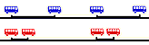
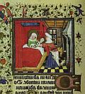

El cristianismo no viene a decir que uno es una criatura imperfecta que hay que mejorar.
Si ese fuera el mensaje, no habría mayor problema ...para tolerar al cristianismo, por lo menos.
Lo que viene a decir, más bien, es que uno es un rebelde que debe deponer sus armas.
Esto -o algo así- escribió C. S. Lewis, citando al cardenal Newman [*].
Y eso es duro de escuchar ; tanto, que los cristianos nominales tendemos a distraernos, y llegamos a citar esa frase como si se aplicara a los "no cristianos", como si esa rendición nosotros ya la hubiéramos hecho.
Lindo sábado, fresco y soleado. El mediodía, lo paso en Parque Centenario. Tras hurgar en los puestitos de libros usados, almuerzo un choripán (Babelfish: sonaste) sentado al borde del "lago" (casi vacío ahora).
Una nena muy chica (3 o 4 años le calculo) corre a las palomas,
y les tira maíz. Una cara de alegría que es una dicha mirarla.
Cerca, su madre (supongo) le dice :
-Uy, mirá Agus! Mirá el perro cómo se metió en el agua ! Mirá !...
allá !
Agus mira para otro lado, sin ver al
perro en cuestión. La madre se impacienta y va subiendo el volumen:
- Allá!! .... (Agus sigue desorientada)... Allá, BOLUDA!!!
Otra foto de este mediodía: al salir del parque, pasé frente a un
centro de jubilados o algo así, que exhibe algunos carteles
con textos, que se suponen graciosos unos, didácticos otros.
Uno de ellos decía:
"El pensamiento libre de los periodistas [sic] es uno de
los pilares de la libertad de nuestra sociedad.".
Y era un cartel del segundo grupo, les juro.
"Alimenta tus fantasías, no tus vanidades, nena ... yeah!", escucho que dice (en segundo plano, y sin tomarse muy en serio [*], espero) nuestro Spinetta ("La luz te fue", "Spinetta y los socios del desierto").
Como si hubiera alguna diferencia.
([*] En la misma canción, dice: "O reciclamos o morimos; vale la pena tenerlo en cuenta, nena, yeah!". No puede estar tomándose en serio... no? )
Un léxico etimológico de términos relacionados con la religión. Escrito con una cierta... digamos graciosa agudeza, muy poco frecuente en estos lugares. Nada confiable en sus juicios extralinguísticos -a veces de una sentenciosidad soberbia que creeríamos argentina, si no fuera que la sabemos barcelonesa- pero igual vale la pena.
Dos entradas (deberíamos usar la palabra "entrada" en lugar de "post", pienso ahora... ) del diario de Leon Bloy, en diciembre de 1909.
- Recibo un carta deliciosa de un joven soldado de guanición en
Nevers, que me lee con piedad.
«Tengo la extraña sensación —dice— de que usted está muy cerca de mí y yo muy lejos de usted». - Una mujer me ha escrito que le parezco encargado de atraer a las ovejas descarriadas. Le respondo que no me interesa atraer a las ovejas, sino a los leones, y hasta a los hipopótamos extraviados; y que nunca pueden constituir un número demasiado grande.
-
... dos prisioneros, en dos celdas contiguas,
que se comunican dando golpes en la pared.
La pared es lo que los separa, pero también lo que los comunica.
Así sucede entre nosotros y Dios. Toda separación es un vínculo.
Simone Weil
Esperando -largo rato- el colectivo, me enojo cuando veo llegar dos coches casi juntos. La empresa tiene que poner N coches por hora, pero si no vienen separados uniformemente, es como si pusiera menos ... pienso... o no ?
Y sale un problema que, con algunas variantes tomé en un parcial hace poco.
Simplificando: supongamos que la empresa debe garantizar un coche cada
cinco minutos (dicho de otra manera: el tiempo promedio entre coches debe ser de 5 minutos;
dicho de otra manera -verificar que es equivalente- en promedio pasan
12 coches por hora).

Ahora bien, pongamos que las línea roja y azul
cumplen con esa reglamentación, y la azul manda sus coches
equiespaciados, mientras que la roja los manda
en tandas, separados por 2 minutos y 8 minutos.
Para mí, usuario que llega a la parada en un instante al azar,
es lo mismo ? Parece que no... veamos. Supongamos que lo que me interesa es el tiempo promedio
que debo esperar al próximo coche (suposición discutible pero razonable:
de eso depende el tiempo total de mi vida que perderé esperando colectivos).
Calcular cuánto vale en un caso y en el otro, y verificar que (y en cuánto)
la distribución despareja me perjudica. Adicionalmente, comparar con el caso
de informalidad extrema, en el que los coches vienen en instantes totalmente
aleatorios, pero siempre con la tasa promedio reglamentada.
Piense un poco, y apriete el link de abajo para ver la solución.
[El profesor Mairena también ha torturado a sus alumnos con esto]
Algo más sobre lo del Effatá:
A Tom le gustó. Y lo relaciona -en aplicación acomodaticia, tal vez- con el tema de "lo ordinario que se transforma en extraordinario. Palabras cotidianas que pueden transformar el mundo de los que la oyen. Así como los humildes son llamados a ser hijos adoptivos de Dios, y el pan y el vino se convierten en la carne y la sangre de Jesucristo".
A Alejandro González ... pues no, no le gustó. Y me escribe:
-
Ingenioso fuego de artificio —pero anacrónico e inconvincente hasta
decir 'basta' (que no sé cómo se dirá en arameo). Para un lector menos
interesado en demostrar que el escritor del pasaje era más ocurrente que
cualquiera de sus posibles lectores pretéritos o futuros, la evidencia
va por otro lado: como otros textos del mismo contexto cultural, los
Evangelios testimonian la creencia en la curación por la palabra (o al
menos una curación en la que la palabra tiene una gran importancia).
Que, junto a la traducción, y en primer lugar, se dé la palabra aramea
que se supone efectivamente utilizada en la curación supone que este
dato se consideraba importante, valioso. Hay que ser notoriamente
frívolo para pensar que alguien interesado de veras en salvar almas y
propagar la Verdad se iba a detener en tender celadas como ésas —sobre
todo cuando la supuesta reacción de decepción y desengaño al aparecer a
continuación la traducción es mera proyección voluntarista del
sermonero: con la misma o más razón podrías pensar que la traducción
satisface la curiosidad sobre el sentido de las palabras, pero en modo
alguno está cargada del valor mágico del original.
No en vano hablábamos hace poco acerca de la sacralización de los textos latinos y la sensación de que las 'Divinas Palabras' pierden al verterse en la lengua de uso cotidiana (e incluso se desvirtúan, como señalabas, cuando se pierde el 'decoro' literario, haciendo hablar a un ángel como si fuera la Organización Mundial de la Salud).
(Nótese, por añadir ejemplos menos evidentemente religiosos, que en las películas sobre nazis, se dice siempre "Hail Hitler", y desde luego "Salve, Hitler" o "Salud, Hitler" o cosa parecida no iba a colar.)
Compruebo igual -lo que bien sabía Santo Tomás- la utilidad de las objeciones para afinar el pensamiento.
Por su lado, Flavia me hace notar -entre otras cosas- lo que acota el comentario de la Biblia de Jerusalén: que "esa expresión [effathá] fue incorporada a la liturgia del bautismo, lo cual viene a aportar a la idea de la "apertura" de una vida nueva, ".
Y Laura me dice algo sobre lo mismo, pero dando una vuelta de tuerca : no es que la liturgia se haya basado en el texto de Marcos, me dice, sino que el texto de Marcos se motiva por el uso litúrgico, que sería anterior a la puesta por escrito de los evangelios. Y me pasa una página en francés ... (que perdí). No sé si será cierto (en todo caso, no me parece inverosímil), pero es muy interesante.
Después la seguimos, tal vez...
La situación de los católicos en los Estados Unidos es muy diferente de la de acá. Y entre otras cosas, es muy diferente la conformación de las distintas
Para los de afuera, (ateos-agnósticos o catolicos-por-default), para los que viven dentro de la cultura standard, esto que traduzco de Disputations será más bien irrelevante. Esto va más bien para los que han estado o están, de un lado o de otro, más o menos cerca de los católicos que se toman -o eso pretenden- en serio al catolicismo; para los que conocen algo de -por ejemplo- la militancia sectaria, exasperada, resentida y estólida de los grupos católicos de la derecha (lefrebristas y afines); los "católicos fieles", como ellos mismos suelen llamarse.
-
Supongo que no estoy destinado a jugar un papel destacado
en la política eclesiástica de mi país.
Siento un disgusto demasiado profundo -y demasiado inmediato-
ante la arrogancia ubicua e irreflexiva que hay detrás
de pronunciamientos como estos:
-
"No hay solución verdaderamente satisfactoria para estos males,
exceptuando la conversión de obispos (al catolicismo, por supuesto).
"
Para muchos, se trata de una afirmación que casi no dice nada, por obvia e innegable. Yo no puedo dejar de verlo como sintomático de dos problemas muy serios que afronta la Iglesia.
El primero, una especie de hipercatolicismo acuoso por el cual algunos se la pasan excomulgando a otros, por su propia autoridad y como cosa de rutina. Es cosa más explícita entre autoconsiderados "tradicionalistas", y ya he comentado antes sobre este tipo de gente y su frecuente uso del término "supuestos católicos" para referirse a otros. Pero tampoco faltan autoconsiderados "progresistas" que denuncian a la Iglesia por no seguir -de una manera o de otra- los claros dictados del Espíritu.
El segundo problema, es el hábito de poner el origen de los males
en ELLOS.
Es culpa del Vaticano, es culpa de los obispos, es culpa de
los disidentes, de los ...
Ellos tienen que cambiar.
Lo peor es que este hábito no se reconoce como tal. Se cree que se trata de análisis imparcial, o simple observación; y se expone como una verdad evidente. Se ha llegado al punto en que un periodista católico puede decir un lunes "Los disidentes son la causa principal de la crisis por los abusos sexuales", y esto suena tan natural y obvio, que, en lugar de resultar expulsado por el ridículo, el tipo seguirá el jueves perteneciendo al periodismo católico,
Una persona que está planeando entrar a la Iglesia y que no ha asistido a una clase de catequesis, puede ponerse tranquilamente a enumerar los pasos que los obispos deberían seguir para convencerlo a él de que ellos son católicos, y el publico -católico- que lo escucha no encontrará nada que objetarle. Un puñado de hombres inventaron un puñado de computadoras y de programas, y de repente todo el que tiene una PC y algún tiempo libre se cree ungido de lo alto como Exterminador de Herejías y Refutador de Disidentes, y cree que la maledicencia, la agitación vana y la chismografía, son Profecía y firme Defensa de la Unica Fe Verdadera.
Y, claro está, puesto que el problema siempre reside en ellos,
el problema nunca reside en mí. Pero el problema
es que justamente yo soy el problema que estoy obligado a arreglar.
Mi asunto no es la de proponer un plan de acción
que garantice la supervivencia de la iglesia en los
Estados Unidos. Mi asunto
es garantizar la supervivencia de la iglesia en los
Estados Unidos ocupándome de que sobreviva en mí.
De última, sobre eso -y sólo sobre eso- tengo control;
y al fin de cuentas es el único camino, me parece,
de reformar y purificar la Iglesia.
Yo no puedo hacer que vos te reformes, yo no puedo hacer
que ellos se reformen, y menos puedo yo hacer que vos
los reformes a ellos.
La unica cosa que reforma y purifica y la gracia de Dios. Pero la gracia no la tengo apilada al alcance de mi mano, no está en un montón del que yo puedo sacar una palada y tirártela encima. Somos como satétiles, todo lo que podemos es reflejar la luz de Dios sobre otros; y no gano nada con decirle al otro que se corra para que la luz de Dios le de pegue mejor.
Si en lugar de preocuparme por ellos, sigo el consejo
de la Escritura y de los santos, y me preocupo por mí,
empiezan a pasar cosas inesperadas .
No puedo decir exactamente qué -se trata de cosas
justamente inesperadas-, porque no se trata
de cosas que ocurran por mi voluntad o por mi designio.
Será en todo caso la voluntad de Dios.
Incluso suponiendo que yo lograra, mediante mi preocupación por ellos,
que ellos hagan lo que yo quiero, obviamente eso sería
mucho menos deseable que lograr (mediante
mi preocupación por mí) que ellos hagan lo que Dios quiere
de ellos.
[link]
Alguna vez mencioné a André Frossard. Acá encontré una selección -buena selección- de su librito "Dios existe, yo me lo encontré".
-
...Se creyó oportuno, suponiéndome hechizado, hacerme examinar por un médico amigo, ateo, buen socialista, que tenía la habilidad de no convocarme a su despacho, donde no habría abierto la boca, sino de venir a casa en visita amistosa y de interrogarme indirectamente, sin insistencia ni curiosidad aparente, no volviendo a los puntos que le interesaban sino después de largos rodeos. Algunas de esas conversaciones sosegadas le pusieron en situación de comunicar a mi padre sus conclusiones: era la «gracia», dijo, un efecto de la «gracia» y nada más. No había por qué inquietarse.
Hablaba de la gracia como de una enfermedad extraña, que presentaba tales y cuales síntomas fácilmente reconocibles. La naturaleza del mal resistía aún al examen, pero los trabajos avanzaban. ¿Era una enfermedad grave? No. La fe no atacaba a la razón. ¿Había un remedio? No; la enfermedad evolucionaba por sí misma hacia la curación; esas crisis de misticismo, a la edad en que yo había sido atacado, duraban generalmente dos años y no dejaban ni lesión, ni huellas. No había más que tener paciencia...
-
...
Todas estas sensaciones que me esfuerzo por traducir al lenguaje inadecuado de las ideas y de las imágenes son simultáneas, comprendidas unas en otras, y pasados los años no habré agotado el contenido. Todo está dominado por la presencia, más allá y a través de una inmensa asamblea, de Aquel cuyo nombre jamás podría escribir sin que me viniese el temor de herir su ternura, ante Quien tengo la dicha de ser un niño perdonado, que se despierta para saber que todo es regalo.
Fuera seguía haciendo un tiempo hermoso, yo tenía cinco años y ese mundo anteriormente hecho de piedra y de alquitrán era un gran jardín donde se me permitía jugar todo el tiempo que el cielo quisiera dejarme en él.
Willemin, que caminaba a mi lado y parecía haber descubierto algo singular en mi fisonomía, me observaba con insistencia médica:
–Pero ... qué te pasa?
–Soy católico. Y como si tuviera miedo de no ser bastante explícito, añadí: -
-apostólico y romano-, para que mi confesión fuese completa.
– Los ojos se te salen de las órbitas...
– Dios existe, y todo es verdad.
– ¡Si te vieses!
No me veía. Yo era una lechuza que hace al mediodía la experiencia del sol.
Pero tal vez lo mejor sea la frase que cierra el libro:
-
Amor, para llamarte así, la eternidad será corta.
... y uno mismo... (es un poco desagradable por impúdico, hablar así de uno, pero es parte del asunto... y acaso es parte de la acción de gracias a que uno está obligado, también). No diré que siempre es igual, a veces vienen épocas de "sequedad" (inocente o culpable, eso es otro tema), épocas en que la oración y la alegría se ven lejos, cuando la misa parece algo ajeno ("qué estoy haciendo acá", te dice esa vocecita...).
Pero hay épocas de alegría; de entusiamo, incluso ("walking on the air"). Con todos los palos que tiro contra curas y liturgias, tal vez acá queda otra imagen ... pero lo cierto es que estas son buenas épocas para mí (gracias a María) y sin ir más lejos, en la misa de hoy, escuchando lo de San Pablo, si no me contenía (había gente!) me ponía a llorar como un chico.
- ...
Así pues, si habéis resucitado con Cristo, buscad las cosas de arriba, donde está Cristo sentado a la diestra de Dios.
Aspirad a las cosas de arriba, no a las de la tierra.
Porque habéis muerto, y vuestra vida está oculta con Cristo en Dios.
Cuando aparezca Cristo, vida vuestra, entonces también vosotros apareceréis gloriosos con él.
Por tanto, mortificad vuestros miembros terrenos: fornicación, impureza, pasiones, malos deseos y la codicia, que es una idolatría, todo lo cual atrae la cólera de Dios sobre los rebeldes,
y que también vosotros practicasteis en otro tiempo, cuando vivíais entre ellas.
Mas ahora, desechad también vosotros todo esto: cólera, ira, maldad, maledicencia y palabras groseras, lejos de vuestra boca.
No os mintáis unos a otros. Despojaos del hombre viejo con sus obras, y revestíos del hombre nuevo, que se va renovando hasta alcanzar un conocimiento perfecto, según la imagen de su Creador,
donde no hay griego y judío; circuncisión e incircuncisión; bárbaro, escita, esclavo, libre, sino que Cristo es todo y en todos. ...
... "y le dijo: «Effathá», que quiere decir: «¡Abrete!» ... ".
¿Por qué, preguntábamos, el evangelio de Marcos contiene la palabra original, junto con su traducción ?
Algunos datos, primero:
Se supone (que alguien me corrija si hace falta;
estoy tocando de oído, como de costumbre) que Jesús hablaba en arameo,
la lengua común de la Palestina de entonces. Aunque el griego vulgar
(koiné; la lengua internacional) y el latín (la lengua del imperio)
eran bastante conocidos.
Por su lado, se cree que Marcos -judío-
escribió (alrededor del año 60) el evangelio en Roma, en griego,
para un público mayoritariamente latino, desconocedor de la lengua
y las costumbres del pueblo judío.
Esto último torna más explicable el que Marcos sea el único de los sinópticos
que trae palabras judías traducidas ("Talita kum" , "Eloi Eloi...").
Pero, no explica por qué dejó la palabra original ("ipsissima vox")
precisamente en el caso que nos ocupa (y otros poquísimos más).
En casi todo el resto del evangelio, Marcos relata sencillamente
los dichos de Jesús sin preocuparse por poner las palabras "originales".
¿Por qué acá sí ?
¿Qué agrega saber que Jesús pronunció "Effathá"?
Una posible -posible, dije- explicación:
Veamos: Se trata de una curación milagrosa; y los curadores
milagrosos siempre han atraído la atención de los hombres.
Entonces más que ahora (pero ahora también; nunca
nos resignamos a aceptar la fragilidad de nuestro
cuerpo, la ignorancia/impotencia de los médicos,
la cercanía del dolor y la muerte). Ese mundo, lleno además
de supersticiones y sabidurías arcanas fraudulentas,
abundaba en curanderos, sanadores de palabra, y la mayoría
estaba ansiosa por conocer a estos hombres (sobre todo
si mostraban "poder") y oir sus historias.
En semejante ambiente, las curaciones de Jesús -tanto relatadas
como presenciadas- seguramente tenían muchísimo poder de atracción.
Atracción malsana y errada, en buena medida, me dirán...
Sí. Precisamente,
lo del "Effathá" bien puede ser una especie de broma de Marcos, para purificar de esas aproximaciones erradas a las curaciones de Jesús.
Imaginemos al auditorio, más bien crédulo, escuchando la historia
de una curación milagrosa ... los dedos, la saliva, el suspiro...
y finalmente una misteriosa palabra mágica, con sonido
oriental ...
- «...y dijo Jesús: "Effathá"...»
- "... que significa ... «Ábrete»".
Exégesis demasiado ingeniosa ? No sé. En cuanto a su consistencia
interna -digamos-, en cuanto al criterio poético -digamos-, me gusta.
Para juzgar su verosimilitud haría falta saber algo más.
Agreguemos que, sacando el "Eloi Eloi..." (donde hay una confusión por el
sonido de las palabras Eloi-Elias), el otro caso en que Marcos deja
el original es el "Talita kum", que puede leerse en la misma clave.
Y si ese escepticismo burlón te parece demasiado "moderno"... a mí no;
los judíos, en particular, eran muy poco tolerantes
y muy burlones con las supersticiones de raíz politeísta-idolátrica-gnóstica
de los pueblos vecinos.
Recordar la burla de Isaías (o era Elías ? después la busco),
las alusiones sarcásticas de los Hechos de los Apóstoles
al culto de Diana, fundado en motivos comerciales...
- Pero ...es una exégesis tuya ?
- No! A mí jamás se me ocurren esas cosas.
- Bueno, eso es un punto a favor... Y dónde la leíste ? Es antigua ?
- No muy antigua... por lo que conozco, tiene menos de una semana de antigüedad.
La encontré acá,
sermón del domingo pasado, de un cura con sermones un poco más interesantes que los
que suelo escuchar por mi parroquia (y por la mayoría)...
Pero supongo que esta explicación no es ocurrencia suya, no sé.
Igual, toda la puesta en escena es interesante.
Agrego una cosa: a todas las consideraciones médicas del sermón,
podríamos juntar -a modo de confirmación- lo que cuenta el evangelio sobre
el caso de la hemorroísa (pegadito al "Talita Kum"; y también por Marcos!),
que es un palo feroz contra los médicos:
"una mujer que padecía flujo de sangre desde hacía doce años,
y que había sufrido mucho con muchos médicos y había gastado todos
sus bienes sin provecho alguno, antes bien, yendo a peor..."
Lucas no tiene ese ensañamiento, como puede verse.
Pero -como dice una tradición- él era médico, así que no iba a tirarse al gremio
en contra...
Ahh... esto explica todo...
-
..."los infrasonidos emitidos por algunos órganos en iglesias y catedrales podrían causar sentimientos raros", comentó Richard Wiseman, psicólogo de la Universidad de Hertfordshire, al noroeste de Londres.
Sin embargo, yo pondría una objeción, basada en mi experiencia personal.
En las misas que suelo frecuentar, no tocan el órgano, sino las
guitarras , que no generan infrasonidos, supongo. Y sin
embargo, a mí me pasa muchas veces, eso de experimentar sentimientos
raros cuando escucho a las guitarristas.
Una palabrita para los que envían comentarios. Aparte del agradecimiento, y las disculpas por respuestas que tengo pendientes, un pedido a dos o tres lectores que comentan en forma (involuntariamente) anónima, a veces incluso haciendo preguntas en privado: si no me ponés el nombre o el email cuando mandás el comentario, en general no puedo saber quién sos... está claro ?
Gracias.
(De paso: el email pueden ponerlo tranquilo que no se publica en ningún lado)
Jesús cura al sordo, (evangelio según San Marcos, del domingo pasado) :
-
... El, apartándole de la gente, a solas, le metió sus dedos en los oídos y con su saliva le tocó la lengua.
Y, levantando los ojos al cielo, dio un gemido, y le dijo: «Effatá», que quiere decir: «¡Abrete!» ...
No había pensado en eso, y una cosa que leí hoy al respecto me llamó la atención...
La sigo después; vayan pensando. Se aceptan explicaciones.

Festejamos hoy, 8 de septiembre,
la Natividad de la Santísima Virgen María.
-
Canten hoy, pues nacéis vos,
los ángeles, gran Señora,
y ensáyense, desde ahora
para cuando nazca Dios.
-
Cuando veo que una persona recibe por voluntad propia el bautismo,
me parece que veo un milagro;
quedo tan boquiabierta como si viera
salir a Lazaro caminando de su tumba.
Es que sé que, en mi caso,
si no me lo hubieran
dado antes de llegar a "la edad del uso de razón",
yo no lo habría sabido encontrar por el uso de ninguna razón.
Antes de éste, hay otro post interesante, que arranca con el tema del autismo (del cual casualmente la semana pasada hablaba con un amigo neurólogo) para derivar al tema de las analogías (mente-computadoras, sobre todo).
Y antes, otro sobre
el caso del militante antiabortista Paul Hill que asesinó a un médico abortista (y a su guardaespaldas)
y que fue condenado a muerte, y ejecutado en Florida la semana pasada.
El tipo (ministro prebisteriano) murió convencido de ser
un hombre de Dios, y un mártir que se va derechito al cielo. Un caso
sobre el que -creo- los militantes antiabortistas de por acá deberían
pensar más. Mark hace una analogía con otros ataques preventivos.
En la misa de hoy, entre varias cosas feas (el "Buenos días!" inicial, el sermón anodino y autorreferencial -comunidad-servicio-participación-bla-bla-bla... ... y una encuesta "multiple choice" : "marque los motivos por los que viene a misa"... fue el momento en que huí a las puteadas), el cura se pone una vez más en modo creativo a la hora de la plegaria eucarística y en lugar de decir lo que debe decir ("Felices los invitados a la cena del Señor"), dice:- "Felices nosotros que hoy somos invitados a la cena del Señor".
No, hombre! Se trata -sobre todo!- del aquel banquete, el que esperamos en la eternidad! Como bien dice acá (y no es un maniático-integrista-litúrgico, es la Comisión de Liturgia ... chilena, eso sí):
-
No es raro oír la fórmula del Misal “Felices los invitados a la Cena del Señor!” transformada en “Felices somos nosotros que hemos sido invitados a la Cena del Señor!”...
Se entiende la preocupación pastoral que anima a los que hacen esta transformación: acercar más la liturgia a los fieles. Pero, sin darse cuenta, reducen considerablemente el alcance de esta frase. Dos textos del Nuevo Testamento están en su origen: “Felices los invitados a la Cena del Cordero” (Apoc 19,9), y la parábola de los invitados reemplazados por los pobres en Lucas 14,15-24 y Mt. 22,10: “Felices los que sientan a la mesa en el Reino de Dios” (la parábola del banquete nupcial en Mt 22, 1-10, que le es paralelo, pero sin la frase).
En los dos casos, se trata de una invitación la más amplia posible: “una muchedumbre inmensa” en el Apocalipsis; “Los pobres, los lisiados, los ciegos y los paralíticos” en Lucas, ya que los verdaderos invitados declinaron su invitación.
Esto significa que la fórmula del Misal no concierne solamente los miembros de la asamblea delante de quien se pronuncia. En una visión de fe que va mucho más allá de la asamblea visible, e incluso de la Iglesia visible, revela a los que van a comulgar que no son justamente los únicos a ser invitados: el pordiosero que está a la puerta el templo lo es también; el anticlerical que habita cerca de la iglesia, lo es también; los niños y nietos de los adultos y personas de edad que van a misa lo son también, aunque algunos no “practican” más; toda la humanidad está invitada a largo plazo a participar del banquete eterno del Reino. A la hora en que los términos de “comunión y misión” vienen a precisar las orientaciones pastorales de muestra época, la fórmula “Felices los invitados a la Cena del Señor” toma todo su peso y, si nunca es oportuno reducir el alcance de esta invitación, con mayor razón menos es el caso hoy.
Por lo mismo, supongo, resulta tan raro oir la forma I de la plegaria eucarística, la que dice aquello de:
- "Te pedimos humildemente, Dios todopoderoso,
que esta ofrenda sea llevada a tu presencia, hasta el altar del cielo, por manos de tu ángel, para que cuantos recibimos el Cuerpo y la Sangre de tu Hijo al participar aquí de este altar, seamos colmados de gracia y bendición. "
No está mal la biografía de Santa Catalina de Siena, por J. Jorgensen, que estoy leyendo.
Catalina era una mujer de carácter fuerte (y el adjetivo es débil...).
Son célebres sus "io voglio" (yo quiero...) [se puede imaginar en la pose de la nena caprichosa, que exije golpeando el suelo con el pie...], que dirigía a sus aconsejados, a los jerarcas eclesiásticos y al mismo Jesús.
Tendría que escribir -y citar- más sobre esto, otro día. Por hoy, me quedo con un anécdota insignificante y que no conocía:
De entre su muchos seguidores, admiradores incondicionales,
se destaca el Beato Raimundo de Capua, que escribió
su biografía. Pero hasta al más incondicional puede llegar a
fatigar una mujer hablando... aunque el tema de conversación
sea la beatitud y aunque la mujer sea Catalina de Siena.
Sucedió que una noche, mientras ella le hablaba con
entusiasmo del cielo, del paraíso, etc,
al pobre fraile se le fueron cayendo los ojos, y empezó
a cabecear...
Catalina (si se hubiera tratade de Teresa
de Jesús, seguramente lo habría dejado durmiendo ...
pero no habría dejado de gastarlo en alguna
carta a sus monjas ... "donoso auditorio el padre Raimundo"...
"harta gracia me hizo..." o cosas así habría escrito; pero los santos
-y las santas sobre todo- son de lo más diferente que hay)
...Catalina lo despertó indignada:
«No es mi intención hablar a las paredes,
y seguramente os sería provechoso
oírme con más atención !».
Mujer de carácter fuerte, ya queda dicho.